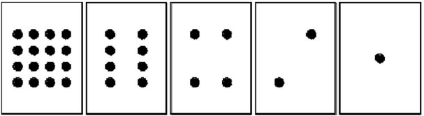

2.1 Binaire⚓︎

Règle du jeu : Disposer les cartes ci-dessous dans l’ordre sur la table. Vous ne pouvez que retourner ou non chaque carte. Il s'agit ensuite de compter le nombre de points visibles.

Jouons avec des cartes⚓︎
 A tour de rôle, demander à votre binôme d’afficher un entier choisi au hasard (ex : 6 , 21, 15 …)
A tour de rôle, demander à votre binôme d’afficher un entier choisi au hasard (ex : 6 , 21, 15 …)
 Existe-t-il un nombre qui peut être représenté de 2 façons différentes avec les cartes ?
Existe-t-il un nombre qui peut être représenté de 2 façons différentes avec les cartes ?
Réponse
Il n'existe qu'une et une seule façon de représenter un entier
Peut-on afficher n'importe quel entier ?
Réponse
on peut représenter l'ensemble des entiers jusqu'à un certain maximum
Quel est le maximum ?
Réponse
16 + 8 + 4 + 2 + 1 = 31
Compter à partir de 0 et essayer de repérer le mécanisme de progression.
Passons au binaire⚓︎
Pour chaque carte, on note 1 si elle est tournée du côté visible (recto) et on note 0 si la face est invisible (côté verso).
Quel nombre est représenté par le mot 01001 ?
Réponse
9
Quel nombre est représenté par le mot 00000 ?
Réponse
zéro
Quel nombre est représenté par le mot 11111 ?
Réponse
31
Comment écrit-on 17 en binaire ?
Réponse
10001
A retenir
Le système binaire est un système de numération de position de base deux : les deux seuls chiffres qui le composent sont le 0 et le 1. Le système binaire est le "langage" des ordinateurs. Toutes les machines numériques utilisent le système binaire pour coder des informations (textes, sons, images, vidéos…). L'ordinateur communique avec le monde extérieur en envoyant des informations sous la forme de nombres binaires à 8 bits appelés octets.
 Un octet (Byte) représente 8 bits (BInary digiT)
Un octet (Byte) représente 8 bits (BInary digiT)
Le système binaire⚓︎
Chaque carte représente en fait un "bit" (binary digit). Un ensemble de bits est appelé un « mot ».
- Il existe 256 mots de 8 bits
- Ces mots codent les entiers de 0 à 255
- Un mot de 8 bits s’appelle un octet
- Le bit le plus à gauche est nommé bit de poids fort
Du binaire vers le décimal⚓︎
et si on passait en système Décimal ….
| ... | 128 | 64 | 32 | 16 | 8 | 4 | 2 | 1 |
|---|---|---|---|---|---|---|---|---|
| ... | \(2^7\) | \(2^6\) | \(2^5\) | \(2^4\) | \(2^3\) | \(2^2\) | \(2^1\) | \(2^0\) |
| ... | 1 | 1 | 0 | 1 | 0 | 0 | 1 | 0 |
\(11010010_2=1 \times 2^7+ 1 \times 2^6+0 \times 2^5+1 \times 2^4+0 \times 2^3+0 \times 2^2+1 \times 2^1+0 \times 2^0=128+64+32+2=210_{10}\)
Le nombre binaire 11010010 correspond donc au nombre décimal 210.
Code Python
En Python, on peut utiliser la fonction int("nombre", base).
>>> int("11010010", 2)
210
Du decimal vers le binaire⚓︎
Principe : dans chaque nombre décimal, il existe une plus grande puissance de 2 qui est inférieure au nombre.
Par exemple, dans 243, il y a 128. Donc
\(243=128 + (115)\)
\(243=128+64+(51)\)
\(243=128+64+32+(19)\)
\(243=128+64+32+16+(3)\)
\(243=128+64+32+16+2+1\)
\(243=1 \times 2^7+ 1 \times 2^6+1 \times 2^5+1 \times 2^4+0 \times 2^3+0 \times 2^2+1 \times 2^1+1 \times 2^0\)
Donc \(243_{10}=11110011_2\)
Méthode des divisions successives

Code Python
En Python, on peut utiliser la fonction bin(nombre). Elle renvoie une chaîne de caractère où le nombre binaire est précédé de '0b'.
>>> bin(243)
'0b11110011'
Définition
- Codage : Opération consistant à représenter des informations à l'aide d'un code.
- Codage binaire : Le code binaire utilise exclusivement les symboles 0 et 1 (systèmes logiques).
- Bit : C'est le chiffre élémentaire de la numérotation binaire.
- Mot : Groupe de "n" bits; un mot de 4 bits s'appelle un quartet, 8 bits s'appelle un octet...
- Poids : Coefficient attaché au rang d'un chiffre dans un système de numérotation. En numérotation binaire, on parle du bit de plus faible poids qui est la position binaire de droite dans un mot et du bit de plus fort poids qui représente le bit situé le plus à gauche dans mot.